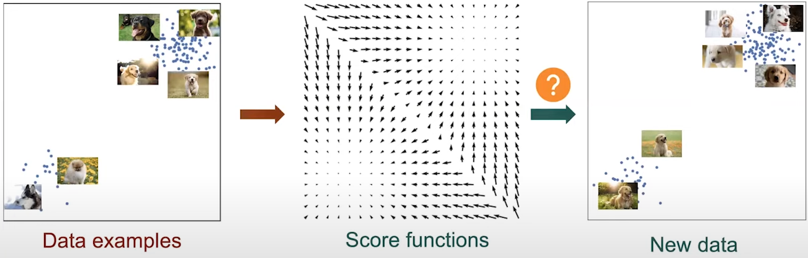
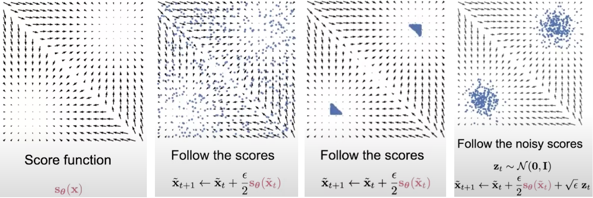
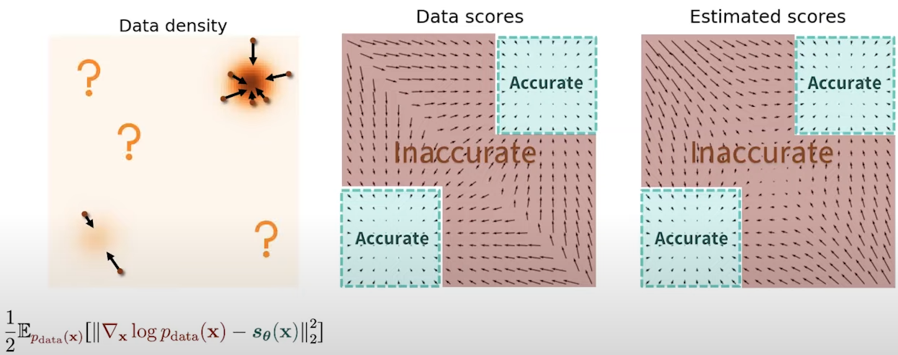
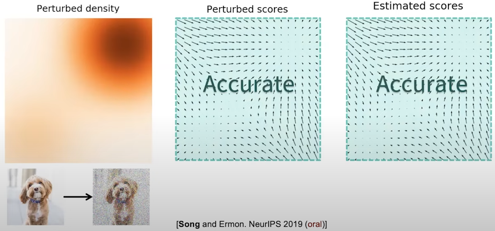
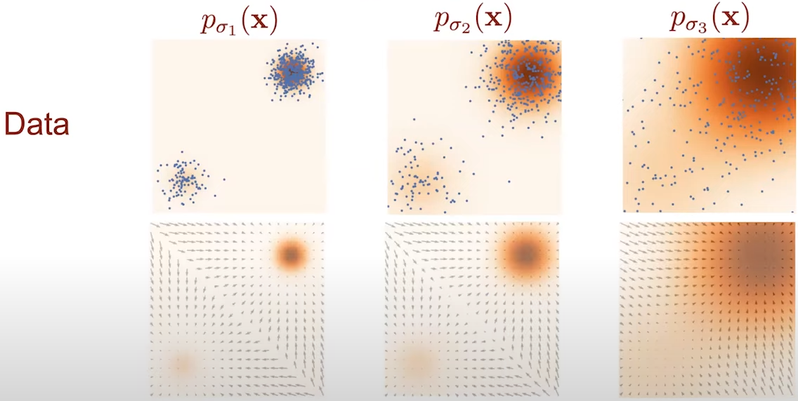
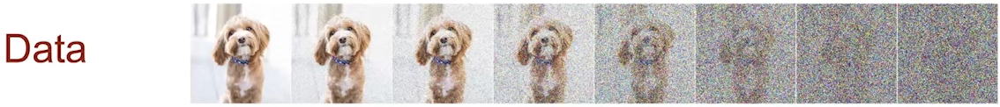
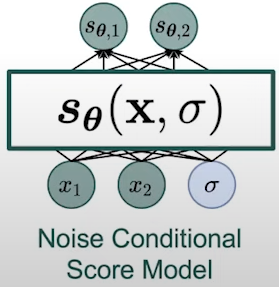

The basic idea behind the so-called score-based generative modeling, also known as diffusion models, is to train a score network such that \( s_\theta(\mathbf{x}) \approx \nabla_x \log p_{data}(\mathbf{x}) \) and then approximately obtain
samples with Langevin dynamics using the score network \( s_\theta(\mathbf{x}) \). For that, we need to estimate the gradient of the data distribution with score matching.
Therefore, we will introduce Langevin dynamics in this section, and then review score matching approaches.
2.1 Score Matching
Given a large dataset, we can use principle statistical methods like score matching to train a score model to estimate the underlying score function.
In order to build a genertative model, we have to find a certain approach to create new datapoints from the given vector field of score functions.

Fig. 1. Generative modeling approach.
But, how can we do this?
Suppose we are given the score function \( s_\theta(\mathbf{x}) \)
(Fig. 1, left) and imagine that there are many random points scattered accross it
(Fig. 1, middle).
Can we move those data points to form samples from the score function? One idea is that we can potentially move those points by following the directions predicted by the score function. However this will not give us valid samples because all of those points will eventually collapse into each other
(Fig. 1, right).
This problem can be addressed by following a noise inversion of the score function. Equivalently, we inject gaussian noise to our score function and follow those noise perturbed score functions
(Fig. 1, right). If we keep this sampling procedure long enough to reach convergence, and if we set the step size to be very very small, then this method will give us the correct samples from the score function.
This method is the well-known approach of Langevin dynamics [Parisi 1981], [Grenander and Miller 1994].
Before dive in the Langevin dynamics, we will review the score matching approach.
2.2 Langevin Dynamics
Langevin dynamics describes a type of stochastic differential equation (SDE) commonly used to model the evolution of systems subject to both deterministic forces and random fluctuations (noise).
In its most basic form, Langevin dynamics for a particle can be written as:
\[
\frac{d\mathbf{x}}{dt} = \underbrace{-\nabla U(\mathbf{x})}_{\text{Deterministic}} + \underbrace{\gamma \mathbf{z}(t)}_{\text{Stochastic}},
\tag{Eq. 1} \label{eq:langevin-dynamics}
\]
where:
- \( \mathbf{x} \) is the position of the particle.
- \( U(\mathbf{x}) \) is the potential energy function.
- \( \gamma \) is the noise strength coefficient.
- \( \mathbf{z}(t) \) is the stochastic term, often Gaussian nosise.
Eq. 1 consists of 2 terms: the first term is the deterministic force, which is the gradient of the potential energy function \( U(\mathbf{x}) \), and the second term is the stochastic force, which is the noise term \( \gamma \mathbf{z}(t) \).
2.1.1. Discretized Langevin Dynamics
The discretized version of Langevin dynamics, which is a variation of Euler-Maruyama method, is given by:
\[
\mathbf{x}_{t} = \mathbf{x}_{t-1} + \frac{\epsilon}{2} \nabla_\mathbf{x} U(\mathbf{x}_t) + \sqrt{\epsilon} \, \mathbf{z}_t,
\tag{Eq. 2} \label{eq:discretized-langevin-dynamics}
\]
where:
- \( \epsilon > 0 \) is the step size.
- \( \mathbf{z}_t \) is the noise term, often Gaussian noise.
- \( \mathbf{x}_0 \sim \pi(\mathbf{x}) \) is the initial value with \pi being a prior distribution.
- \( \mathbf{z}_t \sim \mathcal{N}(0,I) \).
Eq. 2 is the discretized version of
Eq. 1, where the deterministic force is approximated by the gradient of the potential energy function \( U(\mathbf{x}_t) \) and the stochastic force is approximated by the noise term \( \sqrt{\epsilon} \, \mathbf{z}_t \).
In the case of score-based modeling, the energy function term \( U(\mathbf{x}) \) is the score function \( \log p(\mathbf{\tilde{x}}_{t-1}) \). We will denote \( \mathbf{\tilde{x}} \) as the sample obtained by Langevin dynamics:
\[
\mathbf{\tilde{x}}_{t} = \mathbf{\tilde{x}}_{t-1} + \frac{\epsilon}{2} \nabla_\mathbf{x} \log p(\mathbf{\tilde{x}}_{t-1}) + \sqrt{\epsilon} \, \mathbf{z}_t,
\tag{Eq. 2} \label{eq:discretized-langevin-dynamics-score}
\]
When \( \epsilon \rightarrow 0\) and \( T \rightarrow \infty \), the distribution of \( \mathbf{\tilde{x}}_T \) becomes \( p(\mathbf{x}) \). When \( \epsilon > 0 \) and \( T < \infty \), a Metropolis-Hastings update is needed to correct the discretization error, but it can be ignored in practice.
The discretization error comes from the discretization, where we choose \( \epsilon \) and \( T \) to be small enough to satisfy \( \mathbf{\tilde{x}}_T \approx p(\mathbf{x}) \).
Notice that with this formulation, we can train our score network such that \( s_\theta(\mathbf{x}) \approx \nabla_\mathbf{x} \log p_{data} \) and then obtain approximate samples from \( p_{data} \) through Langevin dynamics using the score network \( s_\theta(\mathbf{x}) \).
2.1.2. Annealed Langevin Dynamics

Fig. 2. Langevin dynamics for score-matching.
2.1.3. Sampling Langevin Dynamics
Algorithm 1: Annealed Langevin dynamics.
Require: \( \{ \sigma_i \}_{i=1}^{L}, \, \epsilon, \, T \).
1: Initialize \( \tilde{\mathbf{x}}_0 \)
2: for \( i \leftarrow 1 \) to \( L \) do
3:
\( \alpha_i \leftarrow \epsilon \cdot \sigma_i^2 / \sigma_L^2 \) ▷ \( \alpha_i \) is the step size.
4:
for \( t \leftarrow 1 \) to \( T \) do
5:
Draw \( \mathbf{z}_t \sim \mathcal{N}(0, \mathbf{I}) \)
6:
\( \tilde{\mathbf{x}}_t \leftarrow \tilde{\mathbf{x}}_{t-1} + \frac{\alpha_i}{2} s_\theta(\tilde{\mathbf{x}}_{t-1}, \sigma_i) + \sqrt{\alpha_i} \, \mathbf{z}_t \)
7:
end for
8: \( \tilde{\mathbf{x}}_0 \leftarrow \tilde{\mathbf{x}}_T \)
9: end for
return \( \tilde{\mathbf{x}}_T \)
2.3. Score Matching + Langevin Dynamics
Combining score matching and Langevin dynamics naively does not produce good empirical results. There are several challenges that should be addressed to make this combination work.
For example, it is hard to estimate score functions accurately in low data density regions.
Consider the density function (Fig. 3, left), the ground truth score function (Fig. 3, middle) and the estimated score function (Fig. 3, right).
If we compare the estimated and ground truth scores, we can observe how accurate are they in high density regions (green boxes).
But for low data density regions, the estimated scores are not accurate at all.

Fig. 3. Density regions scores.
This is not really unexpected because we use score matching to train our score model, and score matching compared the difference between the ground truth and the model only at samples from the data distribution.
So, in low data densite regions we do not have enough samples and therefore, we do not have enough information to infer the true score functions in those regions. This is a huge obstacle for Langevin dynamics to provide high quality samples because Langevin dynamics will have a lot of trouble exploring and navigating those low data density regions.
How to address this challenge?
One idea is to inject Gaussian noise to perturb our data points. After adding enough Gaussian noise, we would perturb the data points to everywhere in the space. This means the size of low data density regions becomes smaller. In the image domain, this means adding Gaussian noise to perturb each pixel of the image. We can see in
Fig. 4 how the estimated score now become accurate almost everywhere.

Fig. 4. Density regions scores after perturbation of data points.
This phenomenom is very promising because it at least says that the score function of noisy data densities are much easier to be estimated accurately, and those score functions of oisy densities could provide valuable directional information to guide Langevin dynamics to move from low data density regions to high data density regions.
However, simply injecting Gaussian noise does not solve all the problems, because the perturbation of data points distances are no longer good approximations to the original true data density.
To solve this problem, this paper proposes using multiple sequence of different noise levels. In
Fig. 4, 3 noise levels from \( \sigma_1 \) to \( \sigma_3 \). It uses Gaussian noise with mean 0 and standard deviation from \( \sigma_1 \) to \( \sigma_3 \) to perturb the training dataset.
This will give use three noisy training datasets. For each noisy dataset, there will be a corresponding noisy data density, which is denoted as \( p_{\sigma_1}(\mathbf{x}) \) to \( p_{\sigma_3}(\mathbf{x}) \).
We can show this behaviour in
Fig. 5.

Fig. 5. Density regions across different noise levels.
In the context of images, perturbation means using multiple levels of noise wihich will give us a sequence of images like:

Fig. 6. Image perturbation with different noise levels.
After obtaining those noisy datasets, we would like to estimate the underlying density, the underlying score function of the corresponding noisy data densities.
But, how can we estimate three noisy score functions?
The most naive approach is to train three neural networks so each network will estimate the score function of a single noise level. This is not a scalable solution because in practice, we might require much more noise levels.
Another approach is to consider a noise conditional score model. A noise conditional score model is a simple modification of our score model which takes the noise level $\sigma$ as one additional input dimension.
The output corresponds to the score function of the data density perturbed with noise level \( \sigma \).

Fig. 7. Noise conditional score model.
So, how can we train this noise conditional score model?
We can leverage the idea of score matching. The score matching objective needs to be modified to jointly train the score model across all levels. In such modification, we have a summation with score matching losses.
We have one socre matching loss for each noise level \( \sigma_i \) and a positive weighting function \( \lambda(\sigma_i) \).
The loss is a generalization to the training objective of the first version of diffusion probabilistic models
[Sohl-Dickstein et al. 2015].
It connects score-based models with diffusion models was first unveiled by the Denoising Diffusion Probabilistic Models (DDPM)
[Ho et al. 2020].
The score matching loss floows the expression:
\[
\frac{1}{N} \sum_{i=1}^{N} \underbrace{\lambda(\sigma_i)}_{\text{Positive weighting function}} \underbrace{\mathbb{E}_{p_{\sigma_i}(\mathbf{x})} \left[ \left\| \nabla_{\mathbf{x}} \log p_{\sigma_i}(\mathbf{x}) - s_{\theta}(\mathbf{x}, \sigma_i) \right\|_2^2 \right]}_{\text{Score matching loss}},
\tag{Eq. 3} \label{eq:score-matching-loss}
\]
The weighting function \( \lambda \) balances the scales of score matching loss across all noise levels, which is helpful for optimizaion. The value of the weighting function is typically chosen using people's heuristics but it can also be derive using principled analysis of the problem.
By minimizing this modified score matching loss, if out optimizer is powerful enough, and our model expressive enough, then we will obtain an accurate score estimation for all noise labels.
After training this noise-conditional score model, how can we generate samples?
We can use Langevin dynamics. First, we can use Langevin dynamics to sample from the score model with the biggest perturbation of noise. the samples will be used as the initialization to sample from the score model fo the next noise level. We continue doing this process untill finally generate samples from the score function with the smallest noise level. This procedure is called **Annealed Langevin dynamics** because the rough intuition is hoping to gradually anneal down the temperature of our data density to gradually reduce the noise level.
We can start from random noise, then modify the data according to the score model and the output will be accurate. This method outperform GANS (the best performing method for sample generation to that date) in inception score, but it does not in FID.